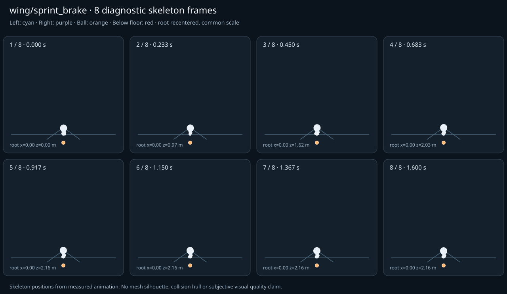

מה הוריד את הציון
- מהירות גוף מול צעדים: שורש 1.35 מ׳/ש׳ מול צעד 0.0333 מ׳/ש׳; קצב 3.75 צעדים/ש׳ (אדום)
- כניסה ויציאה מול המתנה: פער ב־כניסה מול המתנה; יחס חריגה 3.0143 (אדום)
כיסוי: 100%. לא כל מדד חל על כל קליפ; הסטטוס והראיות מפורטים למטה.
שמונה פריימים
תצוגת שלד אבחונית שנבנתה מהפריימים הנמדדים. צד שמאל בכחול, ימין בסגול, כדור בכתום. מיקום השורש ממורכז לצפייה; מיקומו בעולם כתוב בכל פריים.

המדדים והראיות
| מדד | מצב | ערך | ציון | סף ופרטי מדידה |
|---|---|---|---|---|
| החלקת רגליים | ירוק | 0.001 height ratio | 98 | {
"definition": {
"label": "החלקת רגליים",
"unit": "height ratio",
"green": 0.01,
"yellow": 0.035,
"weight": 18,
"description": "Maximum horizontal sole displacement from the first sample of each declared support window, divided by character height. Inferred support is used only when no windows were supplied."
},
"value": 0.000903,
"status": "green",
"score": 98.19,
"evidence": {
"coordinateSpace": "native GLB external Motion node (applied once)",
"supportSource": "declared",
"windows": 5,
"samples": 113,
"maxDriftMeters": 0.001788,
"p95SpeedMetersPerSecond": 0.07114,
"worst": {
"bone": "LeftFoot",
"t": 0.083333,
"start": 0,
"end": 0.1,
"driftMeters": 0.001788
}
}
} |
| חדירה לרצפה | ירוק | 0.002 height ratio | 92 | {
"definition": {
"label": "חדירה לרצפה",
"unit": "height ratio",
"green": 0.005,
"yellow": 0.02,
"weight": 15,
"description": "Maximum depth of the supplied sole probe points and all skeletal joint centers below the declared floor plane, divided by height. Sole probes are not a mesh collision audit."
},
"value": 0.002104,
"status": "green",
"score": 91.58,
"evidence": {
"samples": 1940,
"floorY": 0,
"probeKind": "declared sole probes plus skeletal joint centers (no mesh surfaces)",
"maxDepthMeters": 0.004167,
"worst": {
"t": 0.016667,
"bone": "LeftFoot",
"depthMeters": 0.004167,
"y": -0.004167
}
}
} |
| קפיצות פוזה | ירוק | 0.996 discontinuity ratio | 80 | {
"definition": {
"label": "קפיצות פוזה",
"unit": "discontinuity ratio",
"green": 1,
"yellow": 2.5,
"weight": 18,
"description": "Maximum adjacent 60 Hz-equivalent step: root-relative marker displacement / 0.04 height, root-relative rotation / 15 degrees, or root translation / 0.08 height. A fast continuous action can also exceed this screening threshold."
},
"value": 0.995492,
"status": "green",
"score": 80.09,
"evidence": {
"adjacentPairs": 96,
"observations": 1632,
"maxDegrees60Hz": 7.455235,
"maxMarkerStepHeight60Hz": 0.03982,
"maxRootStepHeight60Hz": 0.039656,
"worst": {
"ratio": 0.9954920990618898,
"t": 0.016667,
"previousTime": 0,
"bone": "LeftFoot",
"markerStepHeight60Hz": 0.03982,
"degrees60Hz": 0.008276
}
}
} |
| חריגות אנטומיות | ירוק | 0 % affected frames | 100 | {
"definition": {
"label": "חריגות אנטומיות",
"unit": "% affected frames",
"green": 0.5,
"yellow": 3,
"weight": 14,
"description": "Percentage of frames with elbow or knee flexion above 165 degrees, neck bend above 80 degrees, or a segment length changing by more than 5%. Optional calibrated hinge checks detect reverse knee flexion above 8 degrees. Conservative marker limits do not diagnose axial joint twist."
},
"value": 0,
"status": "green",
"score": 100,
"evidence": {
"testedFrames": 97,
"affectedFrames": 0,
"checks": 1649,
"maxLimbFlexionDegrees": 153.002213,
"maxRelativeSegmentLengthChange": 0,
"hingeDirectionChecked": true,
"axialTwistChecked": false,
"violations": []
}
} |
| מגע בכדור | לא חל | — height ratio | — | {
"definition": {
"label": "מגע בכדור",
"unit": "height ratio",
"green": 0.015,
"yellow": 0.05,
"weight": 13,
"description": "Maximum absolute distance from the ball surface to the sampled, bone-transformed declared contact point, divided by height. Events are evaluated at their exact declared times by interpolation."
},
"value": null,
"status": "not-applicable",
"score": null,
"reason": "No declared ball contact events.",
"evidence": {}
} |
| כניסה ויציאה מול המתנה | אדום | 3.014 continuity ratio | 50 | {
"definition": {
"label": "כניסה ויציאה מול המתנה",
"unit": "continuity ratio",
"green": 1,
"yellow": 3,
"weight": 10,
"description": "Worst entry/exit mismatch to the best matching idle phase: RMS marker error / 0.04 height, RMS bone rotation / 25 degrees, or RMS endpoint velocity error / 0.75 height per second. Horizontal root translation is aligned; root height and body pose remain measurable."
},
"value": 3.014347,
"status": "red",
"score": 49.88,
"evidence": {
"entry": {
"ratio": 3.014347388079344,
"t": 0,
"idleTime": 0,
"markers": 17,
"rmsPositionHeight": 0.120574,
"rmsRotationDegrees": 33.50487,
"rmsVelocityHeightPerSecond": 0.885108,
"velocityEvaluated": true
},
"exit": {
"ratio": 2.939064111499622,
"t": 1.6,
"idleTime": 0,
"markers": 17,
"rmsPositionHeight": 0.117563,
"rmsRotationDegrees": 32.874152,
"rmsVelocityHeightPerSecond": 0.323714,
"velocityEvaluated": true
},
"worstEndpoint": "entry",
"alignment": "horizontal root translation; raw asset poses used when provided"
}
} |
| מהירות גוף מול צעדים | אדום | 0.975 relative speed error | 26 | {
"definition": {
"label": "מהירות גוף מול צעדים",
"unit": "relative speed error",
"green": 0.2,
"yellow": 0.5,
"weight": 8,
"description": "Relative difference between average root travel speed and the median backward support-foot sweep speed relative to the root. Cadence and implied stride lengths are also reported. In-place clips need an explicit reference travel scenario; stationary actions are not scored as locomotion."
},
"value": 0.975309,
"status": "red",
"score": 26.23,
"evidence": {
"rootSource": "sampled presented root",
"rootSpeedMetersPerSecond": 1.35,
"observedRootSpeedMetersPerSecond": 1.35,
"referenceRootSpeedMetersPerSecond": 1.35,
"supportSource": "declared",
"backwardSweepSpeedMetersPerSecond": 0.033333,
"cadenceStepsPerSecond": 3.749995,
"impliedStrideMeters": 0.017778,
"rootStrideMeters": 0.720001,
"supportSweeps": [
{
"bone": "LeftFoot",
"start": 0.533333,
"end": 0.666667,
"duration": 0.133333,
"sweepMeters": 0.213333,
"speedMetersPerSecond": 1.6
},
{
"bone": "LeftFoot",
"start": 0.933333,
"end": 1.6,
"duration": 0.666667,
"sweepMeters": 0,
"speedMetersPerSecond": 0
},
{
"bone": "RightFoot",
"start": 0.8,
"end": 1.6,
"duration": 0.8,
"sweepMeters": 0.026667,
"speedMetersPerSecond": 0.033333
}
]
}
} |
| סימטריה | ירוק | 0 relative mismatch | 100 | {
"definition": {
"label": "סימטריה",
"unit": "relative mismatch",
"green": 0.03,
"yellow": 0.1,
"weight": 4,
"description": "Maximum bilateral segment-length mismatch. Looping locomotion additionally compares reflected half-cycle leg markers; explicit pose symmetry compares simultaneous bilateral markers. One-sided actions retain unscored motion diagnostics, so a valid kick or dribble arm is not penalized for intentional asymmetry."
},
"value": 0,
"status": "green",
"score": 100,
"evidence": {
"mode": "structural",
"modeSource": "structural default for intentional asymmetry",
"structuralMismatch": 0,
"segments": [
{
"segment": "Arm-ForeArm",
"mismatch": 0
},
{
"segment": "ForeArm-Hand",
"mismatch": 0
},
{
"segment": "UpLeg-Leg",
"mismatch": 0
},
{
"segment": "Leg-Foot",
"mismatch": 0
}
],
"motionRmsHeight": null,
"worstMotion": null,
"bilateralPoseRmsHeightUnscored": 0.09373,
"note": "One-sided authored actions are checked for structural symmetry only."
}
} |